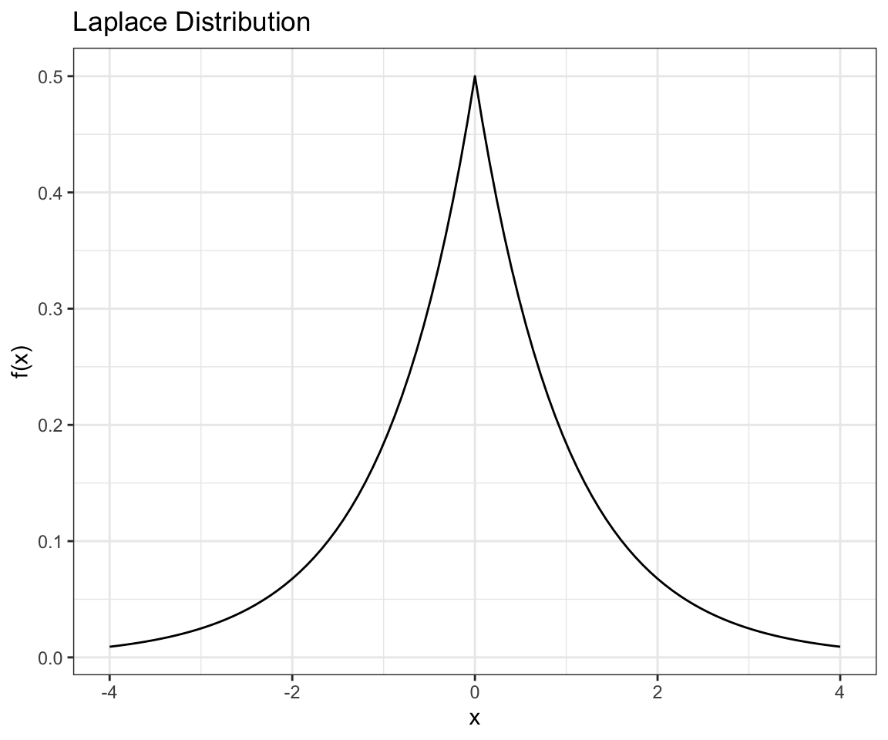

x <- rbinom(n = 10000, size = 100, prob = .05)
y <- dpois(x = seq(0,20), lambda = 5)Week 5
Recap:
What’s the most important thing to learn about these distributions?
- Memorize the mean and variance formulas?
- The intuition of how to derive those?
Nay; the thing that’s most important is to know when a distribution is appropriate to use or not.
Say our data is zero or ones — a normal distribution is not appropriate.
What about the number of times a coin-flip comes up heads when flipped 10,000 heads? It’s not a normal distribution, but it’s pretty close to one.
Another important ability to develop is to recognize the forms of distributions when they come up, since it’s a handy trick to be able to spot the integral of a pdf (or something close to it) which will always be 1.
An example could be spotting a probability density function like \(e^{-ax}\).
If one writes that \(1-q = e^{-a}\), then \(e^{-ax} \propto (1-q)^x q\), the Geometric distribution (which is a discrete exponential distribution).
In general, one may want to be familiar with the relationships among probability distributions.
Families of Distribution (cont. Discrete Distributions)
Poisson as limit of Binomials (“Law of small numbers”)
Geometric Distribution
The Geometric(q) distribution has pmf
\[p(x|q) = (1-q)^{x-1} q \mathbb 1(x \in \mathcal X),\]
where \(\mathcal X = \{ 1, 2,... \}\). The parameter \(q \in (0,1)\).
The mean and variance of \(X \sim \text{Geometric}(q)\) are:
\[EX = 1/q\] \[\text{Var}(X) = \frac{1-q}{q^2}.\]
Gambler’s Fallacy
Suppose you are playing a game with dice and someone notices that 1 hasn’t been rolled yet. Since the proportion of times that 1 is rolled must converge to 1/6, they think there is a high probability of rolling a 1 next.
Do you think that the probability of rolling 1 next is (a) higher than 1/6, (b) equal to 1/6, or (c) lower than 1/6?
A statistician might say we actually don’t know that the die is fair, and would need to come up with some empirical evidence describing our uncertainty around the fairness of the die.
However, in general, if we assume that the die is fair, then the correct answer is that the probability of rolling 1 does not depend on the prior rolls, and hence would be 1/6.
Memorylessness property
The gambler’s fallacy is related to a special property of the Geometric distribution.
Suppose you have flipped tails \(t\) times. What is the probability that it will take \(\geq x\) more flips to get heads? It doesn’t matter that we got tails \(t\) times already!
Memorylessness property: If \(X \sim \text{Geometric}(q)\), then for all integers \(t, x \geq 0\),
\[P(X > t + x | X > t) = P(X > x).\]
Geometric distributions are the only discrete distributions on \(\{1,2,...\}\) satisfying this property.
Why would we say that a normal distribution doesn’t have this memorylessness property? Well, if \(X \sim \mathcal N(\mu, \sigma^2)\) then it’s not true that \(X | X > x_0\) is a normal distribution.
Families of Continuous Distributions
Uniform Distribution
The uniform distribution from \(a\) to \(b\) has pdf
\[p(x| a,b) = \frac{1}{b-a} \mathbb 1(x \in \mathcal X)\]
where \(\mathcal X = (a,b).\) The parameters are \(a,b \in \mathbb R\) with \(a < b\).
The mean and variance of \(X \sim \text{Uniform}(a,b)\) are:
\[EX = (a+b)/2\] \[\text{Var}(X) = \frac{(b-a)^2}{12}.\]
Normal (Gaussian) Distribution
The \(\mathcal N(\mu, \sigma^2)\) distribution has pdf
\[p(x | \mu, \sigma^2) = \frac{1}{\sqrt{2 \pi \sigma^2}} \exp \left( -\frac{1}{2\sigma^2} (x-\mu)^2 \right)\]
for all \(x \in \mathbb R\). The parameters are \(\mu \in \mathbb R\) and \(\sigma^2 > 0.\)
The mean and variance of \(X \sim \mathcal N(\mu, \sigma^2)\) are \[EX = \mu\] \[\text{Var}(X) = \sigma^2.\]
Be careful that some people write \(\mathcal N(\mu, \sigma)\) to denote the normal distribution with mean \(\mu\) and standard deviation \(\sigma\). This comes up when there’s a formula in the second parameter position.
Special Properties of the Normal Distribution
The normal distribution’s most special property relates to the central limit theorem (CLT).
- CLT tells us that the sum of a large number of independent random variables is approximately normal.
- Consequently, many real-world quantities tend to be normally distributed.
- When designing models, the CLT helps us understand when a normal model would be appropriate.
Why would human height be roughly normal? Because there are so many little factors (huge numbers of genetic loci, specific environmental factors, etc.) that add up together to form individual observations leading to the variability observed being reminiscent of the CLT.
Analytic tractability:
- Calculations can often be done in closed form, making normal models computationally convenient. Normal distributions can be combined to build complex models that are still tractable, such as Kalman filters.
For details on the analytic properties of the normal distribution and how its “niceness” led to its derivation:
- https://link.springer.com/chapter/10.1007/978-0-387-46409-1_7
- https://www3.nd.edu/~rwilliam/stats1/x21.pdf
- https://maa.org/sites/default/files/pdf/upload_library/22/Allendoerfer/stahl96.pdf
- https://math.stackexchange.com/questions/384893/how-was-the-normal-distribution-derived
Chi-Squared Distribution
Suppose that \(X_1, ..., X_n \sim \mathcal N(0,1)\) independently.
The distribution of \(\sum_{i=1}^n X_i^2\) is called the chi-squared distribution with \(n\) degrees of freedom, denoted \(\chi^2(n)\) or \(\chi_n^2\).
The chi-squared distribution comes up a lot in statistical hypothesis testing, for instance when performing a \(t\) test.
If \(X_1,...,X_n \sim \mathcal N(\mu, \sigma^2)\) independently, then
\[(1/\sigma^2) \sum_{i=1}^n (X_i - \bar X)^2 \sim \chi^2(n-1).\]
Why the \(n-1\) instead of \(n\)? One already uses one degree of freedom to estimate the sample mean.
It turns out that \(\chi^2(n)\) is a special case of the Gamma distribution.
Gamma Distribution
The Gamma(a,b) distribution with shape \(a>0\) and rate \(b>0\) has pdf
\[p(x | a,b) = \frac{b^a}{\Gamma(a)} x^{a-1}\exp(-bx) \mathbb 1(x \in \mathcal X)\]
where \(\mathcal X = (0,\infty)\). Here, \(\Gamma(a) = \int_0^\infty t^{a-1}e^{-t} dt.\)$
The mean and variance of \(X \sim \Gamma(a,b)\) are:
\[EX = a/b\]
\[\text{Var}(X) = a/b^2.\]
Be careful that there is another parameterization of the Gamma distribution that is often used. (In fact, Casella & Berger seem to prefer this parameterization.)
\(\text{Gamma}(a, \theta)\) with shape \(a > 0\) and scale \(\theta > 0\) (where \(1/\theta\) is the same as the rate parameter from before) has pdf:
\[p(x | a, \theta) = \frac{(1/\theta)^a}{\Gamma(a)} x^{a-1} \exp(-x / \theta) \mathbb 1 (x \in \mathcal X)\]
where \(\mathcal X = (0,\infty)\). When coding and reading books, make sure one knows which is being used. In what follows, unless otherwise specified, we’ll use the shape and rate parameterization.
Gamma relationships
- \(\text{Gamma}(1,\lambda) = \text{Exponential}(\lambda).\)
- If \(X \sim \text{Gamma}(a,b)\) then \(cX \sim \text{Gamma}(a,b/c)\).
- If \(X_i \sim \text{Gamma}(a,b)\) independently for \(i = 1,...,n\), then \[\sum_{i=1}^n X_i \sim \text{Gamma}(a_1 + ... + a_n, b).\]
- \(\text{Gamma}(n/2,1/2) = \chi^2(n)\), the chi-squared distribution with \(n\) degrees of freedom.
Exponential Distribution: Memorylessness Property
The exponential distribution is a special case of the Gamma distribution.
The exponential distribution has the special property that it is the only continuous distribution on \((0,\infty)\) with this property.
If \(X \sim \text{Exponential}(\lambda)\), then for all \(x, t > 0\), \[P(X > t+x | X>t) = P(X>x).\]
This is the same as the memorylessness property of the Geometric distribution, but in the continuous case.
Memorylessness will come up again when we study stochastic processes, particularly Poisson processes.
The Log-Normal Distribution
The \(\text{LogNormal}(\mu, \sigma^2)\) distribution has pdf
\[p(x | \mu, \sigma^2) = \frac{1}{\sqrt{2\pi\sigma^2}} \frac{1}{x} \exp\left(-\frac{1}{2\sigma^2}(\log(x) - \mu)^2\right) \mathbb 1(x \in \mathcal X)\] where \(\mathcal X = (0, \infty)\). The parameters are \(\mu \in \mathbb R\) and \(\sigma^2 > 0\).
The mean and variance of \(X \sim \text{LogNormal}(\mu, \sigma^2)\) are \[EX = \exp(\mu + \frac{1}{2}\sigma^2)\] \[\text{Var}(X) = \exp(2\mu + 2\sigma^2) - \exp(2\mu + \sigma^2).\]
Log-Normal Relationships
If \(X \sim \text{LogNormal}(\mu, \sigma^2)\), then \(\log(X) \sim \mathcal N(\mu, \sigma^2)\).
The log-normal is very useful for regression models of nonnegative continuous outcomes.
In such applications, it is often preferable to parameterize in terms of \(\theta = \log(EX)\) instead of \(\mu = E\log(X)\):
\[\theta = \log(EX) = \mu + \frac{1}{2}\sigma^2.\]
While the log-normal looks similar to the Gamma distribution, the log-normal tends to be better behaved for regression.
Suppose \(X \sim \text{Gamma}(a,b)\) and \(Y = \log(X)\). Then the pdf of \(Y\) is asymmetric and has a factor of \(\exp(-be^y)\), which makes it strongly disfavor larger values of \(y\).
Jensens Inequality tells us that if we have a convex function like \(g(X) = -\log (X)\), we have that \[g(EX) \leq Eg(X).\]
Beta distribution
The \(\text{Beta}(a,b)\) distribution with parameters \(a,b > 0\) has pdf
\[p(x | a,b) = \frac{1}{B(a,b)}x^{a-1}(1-x)^{b-1} \mathbb 1(x \in \mathcal X),\]
where \(\mathcal X = (0,1)\) and \(B(a,b)\) is the beta function,
\[B(a,b) = \frac{\Gamma(a)\Gamma(b)}{\Gamma(a+b)},\]
recalling that \(\Gamma(a) = \int_0^\infty t^{a-1}e^{-t} dt\)$ is the gamma function.
The mean and variance of \(X \sim \text{Beta}(a,b)\) are:
\[EX = \frac{a}{a+b}\]
\[\text{Var}(X) = \frac{ab}{(a+b)^2(a+b+1)}.\]
\(\text{Beta}(a,b)\) often arises as the distribution of a random variable that is the probability of some event.
In Bayesian statistics, \(\text{Beta}(a,b)\) is often used as a prior on probabilities \(q\), such as the parameters of Bernoulli, Binomial, Geometric, or Negative Binomial distributions.
If \(X_1 \sim \text{Gamma}(a_1, b)\) and \(X_2 \sim \text{Gamma}(a_2, b)\) are independent then \(X_1 / (X_1 + X_2) \sim \text{Beta}(a_1, a_2)\).
Location-Scale Families
Location-scale families are formed by starting from a single standard pdf \(f(x)\) and considering all pdfs of the form
\[f(x | m, s) = \frac{1}{s} f\left( \frac{x - m}{s} \right)\]
for \(m \in \mathbb{R}\) and \(s > 0\). The location is \(m\) and the scale is \(s\).
If \(X\) has pdf \(f(x)\) then \(sX + m\) has pdf \(f(x | m, s)\) by the change of variable formula.
If \(g(x) = sx + m\), then \(g^{-1}(y) = \frac{y-m}{s}\) and \(\frac{d}{dy}g^{-1} (y) = \frac{1}{s}.\)
\(\mathcal N(\mu, \sigma^2)\) is a location scale family with standard pdf \[f(x) = \mathcal N(x | 0,1) = \frac{1}{\sqrt{2\pi}} \exp(-\frac{1}{2} x^2).\]
If \(X \sim \mathcal N(0,1)\) then \(\sigma X + \mu \sim \mathcal N(\mu, \sigma^2)\).
Laplace Distribution (aka the Double Exponential)
The \(\text{Laplace}(\mu, s)\) distribution has pdf
\[p(x | \mu, s) = \frac{1}{2s} \exp\left( -\frac{1}{s} |x-\mu|\right),\]
for all \(x \in \mathbb R\). The location is \(\mu \in \mathbb{R}\) and the scale is \(s > 0\).
library(ggplot2)
ggplot(data.frame(x=seq(-4,4,.1)), aes(x)) +
stat_function(fun=\(x) { (1/2)*exp(-abs(x)) }) +
theme_bw() +
ylab("f(x)") +
ggtitle("Laplace Distribution") 
The mean and variance of \(X \sim \text{Laplace}(\mu, s)\) are
\[EX = \mu\]
\[\text{Var}(X) = 2s^2.\]
If \(X \sim \text{Laplace}(0,1)\) then \(sX+\mu \sim \text{Laplace}(\mu, s)\).
The standard Laplace pdf is \(f(x) = \frac{1}{2} \exp(-|x|).\)
The Laplace distribution has heavier tails than the Gaussian but still has finite moments of all order, that is \(E|X|^k < \infty\) for all \(k \in \{ 1, 2, ... \}\).
It is called the “double exponential” because the Laplace(0,1) pdf is proportional to an Exponential(1) pdf reflected around 0.
If \(X \sim \text{Laplace}(\mu, s)\) then \(\left \lvert \frac{X-\mu}{s}\right\rvert \sim \text{Exponential}(1)\).
Cauchy Distribution
The Cauchy(m,s) distribution has pdf
\[p(x | m,s) = \frac{1}{\pi s\left( 1 + \left( \frac{x-m}{s} \right)^2 \right)}\]
for all \(x \in \mathbb{R}\). The location is \(m \in \mathbb{R}\) and the scale is \(s > 0\).
No moments of the Cauchy distribution are well-defined.
Why is it that the tails of the Cauchy distribution are so much larger than the normal distribution?
The density of the normal distribution are decaying like \(\mathcal O(e^{-x^2})\), whereas the Cauchy distributions tails are decaying like \(\mathcal O(\frac{1}{x^2})\). Even worse is the log-Gamma distribution which decays like \(e^{-e^x}\).
If \(X \sim \text{Cauchy}(0,1)\) then $sX + m (m,s).
Even though the Cauchy distribution looks roughly similar to a Gaussian, the Cauchy distributions have much heavier tails than Gaussian or Laplace distributions.
What happens if you try to estimate \(m\) via the sample mean?
If \(X_1,...,X_n \sim \text{Cauchy}(m,s)\) independently, then
\[\frac{1}{n} \sum_{i=1}^n X_i \sim \text{Cauchy}(m,s).\]
If \(X,Y \sim \mathcal N(0,1)\) independently, then \(X/Y \sim \text{Cauchy}(0,1)\).
Exponential Families
Exponential families are a unifying generalization of many common distributions and possess many nice properties.
Examples include:
- Bernoulli, Binomial, Poisson, Exponential, Beta, Gamma, Inverse-Gamma, Normal (Gaussian), Multivariate Gaussian, Log-Normal, Inverse Gaussian, Multinomial, Dirichlet
Non-examples include:
- Uniform, Cauchy, Students’ t-Distribution
A one parameter exponential family is a collection of distributions indexed by \(\theta \in \Theta\) with pdfs/pmfs of the form
\[p(x \mid \theta) = \exp (\phi(\theta) t(x) - \kappa(\theta)) h(x)\]
for some real-valued functions \(\phi(\theta), t(x), \kappa(\theta),\) and \(h(x)\).
\(h(x)\) has to be non-negative.
\(k(\theta)\) is a log-normalization constant: since \(\int p(x | \theta) dx = 1\),
\[\kappa(\theta) = \log \int \exp (\phi(\theta) t(x)) h(x) dx.\]
\(t(x)\) is called the sufficient statistic.
Examples of One-parameter Exponential Families
The Exponential Distribution Family
The simplest example is the \(\text{Exponential}(\theta)\) distribution family:
since the pdfs are:
\[p(x \mid \theta) = \theta e^{-\theta sx} \mathbb 1 (x > 0) = \exp (\phi(\theta) t(x) - \kappa(\theta)) h(x),\] for \(\theta \in \Theta = (0,\infty)\), where \(t(x)= -x\), \(\phi(\theta) = \theta\), \(\kappa(\theta) = -\log(\theta)\), and \(h(x) = \mathbb 1 (x > 0)\).
We could just as easily move the \(-\) sign on \(t(x) = -x\) to \(\phi(\theta)\), so there’s not necessarily a unique choice of \(\phi\) and \(t\). There are multiple equivalent formulations. Sometimes people use different notation, such as \[h(x) c(\theta) e^{\phi(\theta)t(x)},\]
where \(c(\theta) = e^{-\kappa(\theta)}\).
In this case we’re just defining \(t(x)\) to be the sufficient statistic, but there’s another sense in which a sufficient statistic is information that tells one all the information about a parameter in question — these turn out to be equivalent.
The Poisson Distribution Family
The \(\text{Poisson}(\theta)\) distributions form an exponential family since the pmfs are
\[p(x \mid \theta) = \frac{\theta^x e^{-\theta}}{x!} \mathbb 1 \left(x \in \mathcal X\right) = \exp (x \log (\theta) - \theta) \frac{1}{x!} \mathbb 1\left(x \in \mathcal X\right) = \exp (\phi(\theta) t(x) - \kappa(\theta)) h(x)\]
for \(\theta \in \Theta = (0,\infty)\), where \(\mathcal X = \{0,1,2,...\}\), \(t(x) = x\), \(\phi(\theta) = \log(\theta)\), \(\kappa(\theta) = \theta\), and \(h(x) = \frac{1}{x!} \mathbb 1(x \in \mathcal X)\).
Multi-Parameter Exponential Families
An exponential family is a collection of distributions indexed by \(\theta \in \Theta\) with pdfs/pmfs of the form
\[p(x \mid \theta) = \exp( \phi(\theta) t(x) - \kappa(\theta)) h(x) \]
Gamma Example
The \(\text{Gamma}(a,b)\) distributions, with \(a, b > 0\) are an exponential family:
\[p(x \mid \theta) = \exp ( \phi(\theta)^T t(x) - \kappa(\theta)) h(x),\]
for some vector-valued functions
\[\phi(\theta) = \begin{pmatrix} \phi_1(x) \\ \vdots \\ \phi_k(\theta) \end{pmatrix} \quad \text{ and } \quad \text{(}x) = \begin{pmatrix} t_1(x) \\ \vdots \\ t_k(x) \end{pmatrix}\]
\[\begin{aligned} \text{Gamma}(x \mid a,b) & = \frac{b^a}{\Gamma(a)}x^{a-1} \exp (-bx) \mathbb 1(x > 0) \\ & = \exp(\phi(\theta)^Tt(x) - \kappa(\theta)) h(x) \end{aligned}\]
where \(\theta = (a,b)^T\), \(\phi(\theta) = (-b, a-1)^T\), \(t(x) = (x,\log x)^T\), and \(h(x) = \mathbb 1(x > 0)\), and since \(\kappa(\theta)\) is always the normalizing constant, that’s where the \(\Gamma(a)\) term goes.
So we’d have to get that \[\kappa(\theta) = -a \log b + \log \Gamma(a),\] \[\text{since } e^{-\kappa(\theta)} = \frac{b^a}{\Gamma(a)}.\]
Exponential Families: Special Properties
The entropy of a random variable \(X\) is
\[H(X) = -\sum_{x \in \mathcal X} p(x) \log(p(x)) \quad \text{ if $X$ is discrete},\] \[h(X) = -\int p(x) \log (p(x)) dx \quad \text{ if $X$ is continuous.}\]
Exponential families have maximum entropy subject to a linear constraint. More precisely, among all distributions satisfying the constraint that \(\mathbb{E}t(X) = \tau\) for some \(\tau \in \mathbb{R}^k\), an exponential family distribution with sufficient statistic \(t(x)\) has maximum entropy.
Can we use this framework to show how the discrete uniform distribution is the maximum entropy distribution on a discrete set?
Yes — in that case, the idea is that there is no constraint \(t(x)\), or \(t(x)\) could be said to be a zero-dimensional vector.
One might be interested in the fact that entropy represents the average minimum number of bits needed to encode a message.
https://en.wikipedia.org/wiki/Entropy_(information_theory)
https://machinelearningmastery.com/what-is-information-entropy/
The rough interpretation is that if all you know is that \(\mathbb E t(X) = \tau\) then an exponential family distribution makes the fewest assumptions about the rest of that distribution.
In Bayesian statistics, exponential families are (incredibly) useful because they admit conjugate priors, facilitating posterior computation.
Multiple Random Variables
Random Vectors
It’s often important to consider multiple random variables at a time, like clinical measurements on height, weight, age, sex, blood pressure, etc. on a set of subjects.
A random vector is a function from the sample space to a \(d\)-dimensional real space.
Sometimes we denote a random vector by a single letter like \(X\), like \[X(s) = (X_1(s), ..., X_d(s)) \in \mathbb{R}^d.\]
Other times we’ll use different letters for each entry, like \((X,Y,Z)\) that takes values \((X(s), Y(s), Z(s)) \in \mathbb{R}^3\).
We’ll return now to the Monty Hall problem to illustrate multiple random variables.
Let \(X\) be the door that the car is behind, and \(Y\) is the door that Monty opens.
The pair \((X,Y)\) is a random vector taking values in \(\mathbb{R}^2\) (or more specifically \(\{1,2,3\} \times \{1,2,3\}\)).
Since we chose door #1 at first, our assumptions imply that
\[X \sim \text{Uniform}(\{1,2,3\})\] \[P(Y = 2 | X = 1) = P(Y = 3 | X= 1) = 1/2\] \[P(Y = 3 | X = 2) = 1\] \[P(Y = 2 | X = 3) = 1\]
Recall that we wrote down the joint distribution in a table:
| Monty Opens Door #1 | Open #2 | Open #3 | |
|---|---|---|---|
| Car is behind #1 | 0 | 1/6 | 1/6 |
| … behind #2 | 0 | 0 | 1/3 |
| … behind #3 | 0 | 1/3 | 0 |
This table is implied by the assumptions written down above.
The probability of the event that \(X = x, Y = y\) is denoted \(P(X = x, Y = y)\).
Joint Probability Mass Functions
A random vector is discrete if its range \(X(S) \subset \mathbb{R}^d\) is countable.
The joint pmf of a discrete random vector \(X = (X_1, ..., X_d)\) is
\[f_X(x) = f_X(x_1, ..., x_d) = P(X_1 = x_1, ..., X_d = x_d)\]
for \(x = (x_1, ..., x_d) \in \mathbb{R}^d\).
As before, it’s common to drop subscripts and or use \(p\) instead of \(f\), as in:
\[p(x,y) = p_{X,Y}(x,y) = f(x,y) = f_{X,Y}(x,y).\]
If \(X \in \mathbb{R}^d\) is a discrete random vector with range \(\mathcal X\), then
\[P(X \in A) = \sum_{x \in \mathcal X \cap A} p(x)\]
\[E h(X) = \sum_{x \in \mathcal X} h(x) p(x).\]
Here, though, \(x = (x_1, ..., x_d)\), so writing out the formulas more explicitly, \[P((X_1, ..., X_d) \in A) = \sum_{(x_1, ..., x_d) \in \mathcal X \cap A} p(x_1, ..., x_d),\] \[E h(X_1, ..., X_d) = \sum_{(x_1, ..., x_d) \in \mathcal X} h(x_1, ..., x_d)p(x_1, ..., x_d).\]
Expected winnings in the Monty Hall problem
Say the car is worth $30,000 and a goat is worth $150.
If you stick with door #1, then your winnings are
\[h(x,y) = 30000 \times \mathbb 1(x = 1) + 150 \times \mathbb 1(x \neq 1),\]
so your expected winnings are
\[\mathbb{E}h(X,Y) = 30000 \times \frac{1}{3} + 150 \times \frac{2}{3} = 10100.\]
If you always switch doors, then your winnings are
\[h(x,y) = 30000 \times \mathbb 1 (x \neq 1) + 150 \times \mathbb 1(x=1),\]
so your expected winnings are
\[\mathbb{E}h(X,Y) = 30000 \times \frac{2}{3} + 150 \times \frac{1}{3} = 20050.\]
It’s interesting to note that these expected values only depend on what door the car is behind (\(X\)), not what Monty does (\(Y\)).
One might say we’ve “conditioned” on our strategy in these two calculations. One could introduce another random variable \(Z\) to indicate our strategic choice, which we would be conditioning on.
The expected value of an indicator with respect to a random variable is always the probability of that event.
Marginal Probability Mass Functions
For a discrete random vector \((X_1, ..., X_d)\), the marginal pmf of \(X_i\), denoted \(f_{X_i}(x_i)\) or \(p(x_i)\), is just the pmf of the random variable \(X_i\).
That is \[f_{X_i}(x_i) = p(x_i) = P(X_i = x_i).\]
We call it a “marginal pmf” in the context of a joint distribution on multiple variables.
The marginal pmfs can be represented in terms of the joint pmf:
\[p(x) = \sum_{y \in \mathcal Y} p(x,y)\]
\[p(y) = \sum_{x \in \mathcal X} p(x,y)\]
where \(\mathcal X\) and \(\mathcal Y\) are the ranges of \(X\) and \(Y\), respectively.
In general for a random vector, \((X_1, ..., X_d)\),
\[p(x_i) = \sum_{x_{-i}} p(x_1, ..., x_d)\]
where the sum is over all values of
\[x_{-i} = (x_1, ..., x_{i-1}, x_{i+1}, ..., x_d).\]
Returning to the Monty Hall probability table:
| Monty Opens Door #1 | Open #2 | Open #3 | |
|---|---|---|---|
| Car is behind #1 | 0 | 1/6 | 1/6 |
| … behind #2 | 0 | 0 | 1/3 |
| … behind #3 | 0 | 1/3 | 0 |
We can read off the marginal pmfs from the table by summing across rows or columns. This is why they’re called marginal pmfs. And the joint probability for specific combinations of \((X=x, Y=y)\) are the individual cell entries.
Conditional Probability Mass Functions
Consider a discrete random vector \((X,Y)\). For any \(y\) such that \(p(y) > 0\), the conditional pmf of \(X\) given \(Y\) is \[f_{X|Y}(x \mid y) = p(x \mid y) = P(X = x \mid Y = y) = \frac{p(x,y)}{p(y)}.\]
Likewise for any \(x\) such that \(p(x) > 0\),
\[f_{Y|X}(y \mid x) = P(Y = y \mid X = x) = \frac{p(x,y)}{p(x)}.\]
For a discrete random vector \((X_1, ..., X_d),\)
\[p(x_i | x_{-i}) = \frac{p(x_1, ..., x_d)}{p(x_{-i})}.\]
The conditional pmf can be seen in a tabular fashion if we take the table and (un-) normalize it so that each row sums to 1 if we’re interested in conditioning on the row-variables, and vice-versa for the columns.
In other words, the conditional pmf \(p(y|x) = p(x,y) / p(x)\) can be seen as
| Monty Opens Door #1 (\(Y = 1 | X=x\)) |
Open #2 (\(Y = 2 | X = x\)) |
Open #3 (\(Y = 3 | X = x\)) |
|
|---|---|---|---|
| Car is behind #1 (\(X = 1\)) |
0 | 1/2 | 1/2 |
| … behind #2 (\(X = 2\)) |
0 | 0 | 1 |
| … behind #3 (\(X = 3\)) |
0 | 1 | 0 |
| Monty Opens Door #1 (\(Y = 1\)) |
Open #2 (\(Y = 2\)) |
Open #3 (\(Y = 3\)) |
|
|---|---|---|---|
| Car is behind #1 (\(X = 1 | Y = y\)) |
undefined | 1/3 | 1/3 |
| … behind #2 (\(X = 2 | Y = y\)) |
undefined | 0 | 2/3 |
| … behind #3 (\(X = 3 | Y = y\)) |
undefined | 2/3 | 0 |
Joint, marginal, and conditional probability density functions
Basically all the math translates over directly, as long as one isn’t worried about measure-theoretic questions.
Suppose \((X,Y)\) is a bivariate random vector and \(f(x,y) \geq 0\) is a function such that for all measurable \(A \subset \mathbb{R}^2\),
\[P((X,Y) \in A) = \int_{-\infty}^\infty \int_{-\infty}^\infty f(x,y) \mathbb 1((x,y) \in A) \text{d}x \text{d}y.\]
Then \(f(x,y)\) is the joint pdf of \((X,Y)\).
More generally, \((X_1, ..., X_d)\) has joint pdf \(f(x_1, ..., x_d)\) if \[P((X_1, ..., X_d) \in A) = \int_A f(x_1, ..., x_d) \text{d}x_1 \cdots \text{d}x_d\]
for all measurable \(A \subset \mathbb{R}^d\). Here \(\int_A\) denotes integration over the set \(A\).
If such a function \(f\) exists, then the random vector is continuous.
For a random vector \((X_1, ..., X_d)\) with pdf \(p(x_1, ..., x_d)\),
\[\mathbb{E}h(X_1, ..., X_d) = \int h(x_1, ..., x_d) p(x_1, ..., x_d) \text{d}x_1 \cdots \text{d}x_d.\]
Usually we write this more compactly as
\[\mathbb{E}h(X) = \int h(x) p(x) \text{d}x,\]
where \(X = (X_1, ..., X_d)\) and \(x = (x_1, ... x_d)\).
If \((X,Y)\) is continuous, then \(X\) and \(Y\) are continuous random variables and their marginal pdfs are just their pdfs as random variables.
Marginal pdfs can be expressed in terms of the joint pdf:
\[f_X(x) = p(x) = \int p(x,y) \text{d}y\] \[f_Y(y) = p(y) = \int p(x,y) \text{d}x\]
For \(y\) such that \(p(y) > 0\), the conditional pdf of \(X\) given \(Y\) is defined as
\[f_{X|Y}(x|y) = p(x|y) = \frac{p(x,y)}{p(y)}.\]
Likewise, for \(x\) such that \(p(x) > 0\),
\[f_{Y|X}(y|x) = p(y|x) = \frac{p(x,y)}{p(x)}.\]
There is something really subtle going on here: we’re not quite “conditioning” on the probability of the conditioned-variable taking on a particular value, since we’re using the density of the random variable in the denominator.